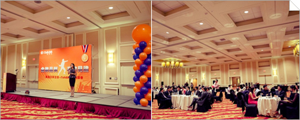

王者駕臨！奧運冠軍雷聲華府論劍，與iTalk用戶親切互動
（弗吉尼亞維也納9月26日）
雖然倫敦奧運烽火已熄一月有餘，但那一個個實現夢想的奪冠時刻，那一位位超越巔峰的冠軍國手仍然激勵着世界各地的華人。其中，一舉斬獲男子花劍冠軍的"書生劍客"雷聲，更是憑藉著其勤勉踏實和聰慧謙遜被廣為喜愛。
作為中國男子花劍隊的贊助商，iTalkBB特別將雷聲和他的教練-- 昔日花劍三劍客之一的王海濱請到美國與iTalk的用戶見面交流。 9月26日下午，見面會在位於Bethesda的Hyatt Regency Hotel拉開帷幕。
見面會現場
分享喜悅，暢談合作，為華人力量之崛起獻力
楊子剛公使代表中國大使館向王海濱、雷聲二人致以祝賀，盛讚了iTalkBB多年以來回饋華人社會的持續努力。 iTalkBB總裁趙捷在講話中闡釋了iTalk與中國男子花劍隊的合作精神。他認為"花劍隊憑藉努力在原本由歐洲國家壟斷的擊劍賽場躋身世界一流，是與廣大海外華人們在異國他鄉中逆勢??拼搏的精神是契合的；與iTalk追求成為世界VOIP行業領導者的企業形像是契合的" 。王海濱教練在隨後的講話他欣然和家長們分享了擊劍運動對亞裔青少年成長的意義。而雷聲則大方地回顧了自己成長成功的歷程。
楊子剛公使致辭
iTalkBB總裁趙捷先生致辭
中國男子花劍隊王海濱教練致辭
奧運冠軍雷聲致辭
趙捷先生還向雷聲頒出了"iTalk品牌大使"的榮譽獎牌，"希望花劍隊和雷聲的"金牌實力和質量能成為一種榜樣，激勵華裔青少年勤勉奮發"。
iTalkBB總裁趙捷先生為雷聲頒發iTalk品牌大使獎牌
傳遞精神，激勵後輩，向華裔孩子教授成功心得
進入互動環節後，伴隨着陣陣歡呼聲浪，換上擊劍服的雷聲英姿颯颯地走上劍道，與美國優秀的華裔少年擊劍選手Edward連手為大家獻上了精彩紛呈的擊劍表演。劍光閃爍，你來我往，如行雲流水，看得觀眾嘖嘖稱奇。
雷聲與美國華裔少年擊劍選手Edward的擊劍表演
在"我向雷聲學擊劍"的活動中，孩子們跟着雷聲煞有介事地學習起來。雷聲耐心地挨個兒手把手教會了大家握劍、出劍與行禮。此外，他還熱情地回答了小朋友們拋出的各種可愛問題。孩子的天真可愛，與雷聲的機智謙和引來了全場的歡笑和掌聲。
圖為雷聲和小朋友們一起切蛋糕
至此，金牌教練王海濱、奧運冠軍雷聲-iTalkBB見面會在孩子們的歡聲笑語中圓滿收官。相信如此別樣的夜晚，會成為許多孩子一生珍貴的回憶。 iTalk還會推出更多精彩活動，回饋廣大用戶。十年相伴，金牌品質，有你見證！
更多詳情，請登錄www.iTalkBB.com 或撥打24小時服務熱線1-877-482-5522查詢。
關於iTalkBB：
iTalkBB新電信是享譽全美的優秀通訊品牌，是國際電訊行業的領導和先驅。其以頂級全球網絡和前沿技術為依託，以最具競爭力的價格為客戶提供高質、清晰的本地、國內及國際長途電話服務，以及高清中文電視直播、回播與點播服務。其電話業務能完全取代傳統家庭電話，並享受多重免費提供的附加功能如來電等待、三方通 話、來電顯示、呼叫轉移等。另有獨一無二的功能——中國大陸、台灣、香港、南韓當地號碼，當地親友只要撥打此號碼，就能接通到在美國的親友，而無需支付國際 長途費用 。iTalkBB的高清中文電視服務，自問世以來便受到了廣泛的好評和歡迎。超過五十個熱門頻道支持實時直播與48小時回看，海量最新電影電視劇綜藝節目免 費無限點播，讓用戶以最低價格盡享華語娛樂。iTalkBB新電信將不斷努力，與您共同成就更美好的生活。iTalkBB設有24小時中英文的客戶服務熱線: 1-877-482- 5522和官方網站www.iTalkBB.com，一年365天提供不間斷的服務與更多信息的查詢。